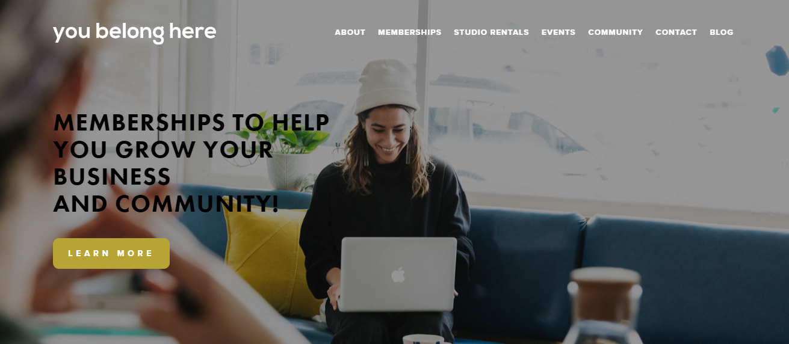
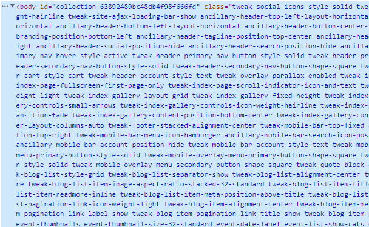
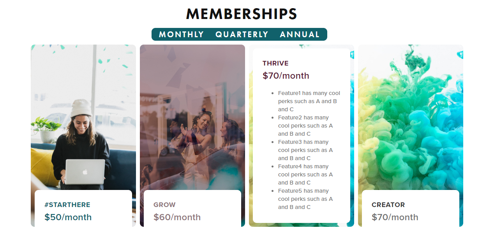

Membership Page - You Belong Here
The YBH Membership Page is a custom site page introducing core services for a local organization. I built this project on the Squarespace platform, though it is heavily customized with code, including certain elements designed from scratch using CSS and Javascript. My focus was development, though the wireframe provided by the client was a rough Photoshop sketch rather than a Figma file with specs, so I made a few design decisions (with approval) throughout the process as well!
- Project Type: Internship/Contract
- Stack Used: Squarespace CMS, CSS / SCSS, Javascript, JQuery plugins (researched and implemented, though not created, by me), Markdown
- Live: View Site

Project Purpose & Goals
I began this project during my web developer internship, and finished it as a contractor hired to complete the organization’s website. The business owner wanted a new and updated page that showcased the membership options available, and could help prospective members decide and select a plan that worked best for their needs. She wanted a variety of elements and features, many of which were not available by default in Squarespace. My goal was to problem solve and research my way to a custom solution.
Process & Problem Solving
I like to think of working with Squarespace as collaborating with a quirky, unpredictable colleague who codes in a different style than I do. The site comes with many pre-styled reusable elements, but the selectors are tricky to navigate, named with strange semantics if named semantically at all, and it’s not always easy to override the inherent styling put in place.

Much of my job has been to get good at using developer tools and compound selectors, so that I can isolate and target elements for styling. I also did quite a bit of translation and consulting work to transform the client’s design & product ideas into what could be developed on the CMS within the timeframe and budget available.
Many of the project’s features are a hybrid of different tools and creative thought processes. Sometimes it was as simple as changing the basic styling of a reusable element. For other elements, it was trickier. For example, the Member Spotlight section should have been a simple gallery feature, but the client’s website is hosted on an older version of Squarespace that didn’t allow for captioned images in the gallery style she wanted. I found a way to modify a different gallery style to create a similar dynamically scrolling effect, without sacrificing the content or aesthetic needs.
A key component of my process was also to research and implement plug-in’s (i.e. reusable features by other developers) that could solve the client’s needs for custom features. However, for this page, I did also create my own custom plugin, which I’m quite proud of. See the next section for details!
Spotlight
The client wanted a toggling feature that would allow someone to see different pricing options for each plan, based on monthly, quarterly, or annual payments. She also wanted to use a particular CSS-based plug-in to create an aesthetically pleasing hover animation on the pricing cards, but the plugin wasn’t compatible with the kind of content she wanted in the section.
So I created a simple interactive Javascript solution for the price toggle, on top of a custom built flexbox container with a similar hover animation to the desired plugin, but with even more tailored measurements for the precise kind of content needed.

Later on, the client wanted to include an additional membership option, so I also added on a fourth pricing card and adapted the whole feature design accordingly.
Current Status
The page is live, but is not yet released and in use. The client still needs to update some of the content as well as change out the stock images. Due to recent feature updates, I do need to tweak a few aspects of the page’s responsiveness as well.
Lessons Learned
Through working on Squarespace, I’ve learned to tailor my coding knowledge to a specific platform with unique limitations. It has taught me a lot about collaborating with unusual approaches and coding choices, as well as making skillful use of a large variety of reusable components.
Before Squarespace, I had not experienced SCSS syntax, and this project helped me learn how to nest selectors with confidence, as well as inspired me to learn more about SCSS/SASS.
It gave me the opportunity to test out my knowledge of Javascript on a real-life project, outside of learning projects and tutorials. It also built my confidence that I could develop custom plug-in solutions on the CMS. Creating the site feature also inspired me to develop a similar animated flex container for displaying my portfolio projects, as you may have seen on the portfolio landing page!
In the future, I think I would still prefer to build a site like this outside of a CMS, so that I have greater control over the page layout setup (not to mention naming my own selectors!), but Squarespace does save a lot of time with prebuilt aesthetic features and allows the client to maintain the site more easily.